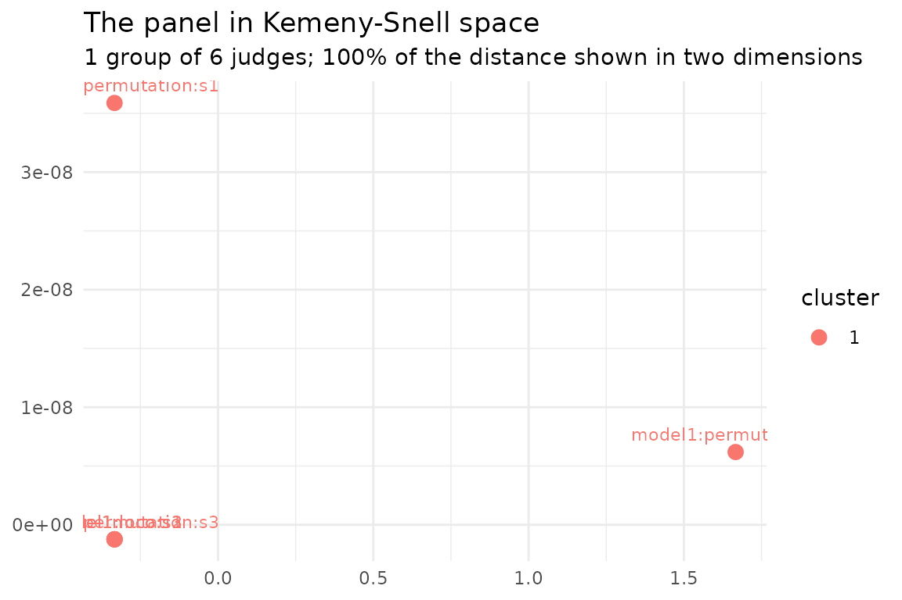

judge_clusters() asks one question: does this panel of
judges fall into groups, or is it one population?
This vignette puts it on a dataset built to divide the panel and gets the answer no. That is the right answer, and the reason it is the right answer is the most useful thing the function has to teach: the two methods here disagree enormously, and they disagree about something a ranking cannot express.
A dataset built to cause it
x1 and x2 are two noisy readings of the
same underlying quantity, and only that quantity drives the response.
Either one alone predicts; neither is needed once you have the
other.
library(rankimp)
set.seed(1)
n <- 200
z <- rnorm(n)
df <- data.frame(
x1 = z + rnorm(n, sd = 1 / 3), # correlation of about 0.9 with x2
x2 = z + rnorm(n, sd = 1 / 3),
x3 = rnorm(n),
x4 = rnorm(n),
x5 = rnorm(n)
)
df$y <- 1.5 * z + 0.8 * df$x3 + rnorm(n)
round(cor(df$x1, df$x2), 2)
#> [1] 0.88x3 is the only predictor that is both real and
irreplaceable. x1 and x2 each carry more
signal than x3 does, but each can stand in for the
other.
Building the panel
Two methods, three seeds: six judges.
library(randomForest)
#> randomForest 4.7-1.2
#> Type rfNews() to see new features/changes/bug fixes.
set.seed(2)
fit <- randomForest(y ~ ., data = df, ntree = 200)
J <- importance_judges(
fit,
methods = c("permutation", "loco"),
data = df, target = "y",
seeds = 1:3, n_perm = 5
)
J
#> <judges> 6 judges x 5 variables
#> models : model1
#> methods : permutation, loco
#> seeds : 1, 2, 3
#> weights : none (equal)
#> recipe : kept; rank_confsets(type = "data") can rebuild this panel
#>
#> x1 x2 x3 x4 x5
#> model1:permutation:s1 3 2 1 5 4
#> model1:loco:s1 3 2 1 5 4
#> model1:permutation:s2 2 3 1 5 4
#> model1:loco:s2 3 2 1 5 4
#> model1:permutation:s3 3 2 1 5 4
#> model1:loco:s3 3 2 1 5 4The two methods do disagree
The design worked. Look at the scores behind those ranks, which the panel keeps:
round(attr(J, "scores"), 3)
#> x1 x2 x3 x4 x5
#> model1:permutation:s1 0.629 0.635 0.726 0.252 0.270
#> model1:loco:s1 0.025 0.036 0.158 -0.003 -0.001
#> model1:permutation:s2 0.646 0.564 0.751 0.246 0.266
#> model1:loco:s2 0.025 0.045 0.168 -0.014 0.003
#> model1:permutation:s3 0.588 0.637 0.662 0.249 0.256
#> model1:loco:s3 0.031 0.038 0.154 -0.005 -0.001Permutation puts x3 and x1 within about 15%
of each other. LOCO puts x3 roughly six times above
x1. That is the difference the correlation was built to
produce, and it is large.
It is also exactly what the two methods are for. Permuting
x1 in a fitted forest barely hurts, because the forest
still has x2 and reroutes through it, so a
marginal measure applied to a fitted model already
discounts a replaceable predictor. Dropping x1 and
refitting discounts it much harder, because now the comparison is
between two models rather than two inputs to one. Both demote the
correlated pair; they disagree about how far.
But the rankings agree
cr <- consensus_rank(J)
cr$tau
#> [1] 0.9666667Five of the six judges produce an identical ordering, and the sixth
differs by one adjacent swap. A factor of six in the scores became
nothing in the ranks: both methods put x3 first, then the
correlated pair, then the two noise variables. Ranking is a coarse
instrument, and here it has thrown away the whole disagreement.
Is there one panel, or two?
het <- judge_clusters(J)
het
#> <judge_clusters>
#> judges : 6
#> variables : 5
#> clusters : 1 (silhouette 0.833, p = 0.07 against one population)
#> start : enumerated medoids
#>
#> # A tibble: 6 × 3
#> judge cluster silhouette
#> <chr> <int> <dbl>
#> 1 model1:loco:s1 1 NA
#> 2 model1:loco:s2 1 NA
#> 3 model1:loco:s3 1 NA
#> 4 model1:permutation:s1 1 NA
#> 5 model1:permutation:s2 1 NA
#> 6 model1:permutation:s3 1 NAk = 1. The panel’s sharpest division in two scores a
silhouette of 0.833, which looks decisive until you ask what a
single population of six judges scores: on the 199 reference
panels, 0.579 on average, and 13 of them reach 0.833 or better. Six
judges always fall into some grouping, and the reference is what tells a
real seam from an arbitrary one.
het$test[c("statistic", "p_value", "null_mean")]
#> $statistic
#> [1] 0.8333333
#>
#> $p_value
#> [1] 0.07
#>
#> $null_mean
#> [1] 0.5790061Read p = 0.07 for what it is. It does not say the panel
is one population. It says a single population produces a seam this
sharp about one time in fourteen, which is not enough to report two.
autoplot(het)
How often does it divide?
inst/simulations/cluster-recovery.R runs this design
over many datasets, so the rate is measured rather than asserted. Panels
of permutation and LOCO judges on correlated predictors, 100 datasets
per cell:
| correlation | judges | divided in two | division was exactly the method families |
|---|---|---|---|
| 0.5 | 6 | 4 / 100 | 4 / 4 |
| 0.9 | 6 | 23 / 100 | 23 / 23 |
| 0.9 | 16 | 82 / 100 | 69 / 82 |
Panel size is what buys the finding. At a correlation of 0.9, two methods by three seeds divides one time in four; two methods by eight seeds divides four times in five. Six judges is very little to establish a grouping from: six points in a discrete space fall into some arrangement, and the reference panels are strict about it for good reason. If the question matters, add seeds.
Those rates are over fresh datasets, though, not over more judges on one dataset, and the two are not the same thing. The dataset above is a stubborn one: run it with eight seeds instead of three and the sixteen-judge panel still comes back undivided, because on this draw the two methods really do produce the same ordering. More judges buy power against a seam that is there. They cannot find one that is not.
The division it does find is trustworthy. At six judges all 27 divisions across both correlations fell exactly on the method families, with no arbitrary seams. At sixteen, 69 of 82 did, and a homogeneous panel of sixteen is divided anyway 8% of the time, which is roughly the shortfall.
The mean tau over those same runs is 0.74 at a
correlation of 0.9. The panel mostly agrees about the ordering however
many judges you give it; what more judges buy is the power to see the
seam that is there.
What a rank-based diagnostic can and cannot see
judge_clusters() works on rankings, because rankings are
what make different importance measures comparable at all. Scores from
permutation and scores from LOCO are not on one scale, and nothing can
put them there. The price is fixed and worth stating plainly: a
disagreement that lives entirely in the magnitudes is invisible to
it. Here that was a factor of six.
So use it for what it answers. If the panel divides,
het$centres holds each group’s consensus, and the honest
report is two rankings with an explanation rather than one ranking with
a caveat. If it does not divide, that is a real finding about the
ordering, and the scores, kept on the panel as
attr(J, "scores"), are where a disagreement about magnitude
will still be sitting.